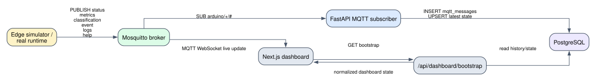
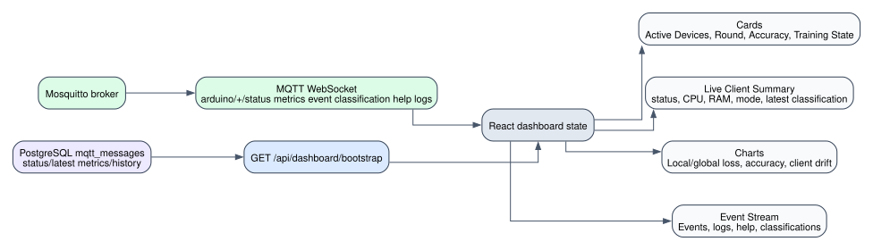
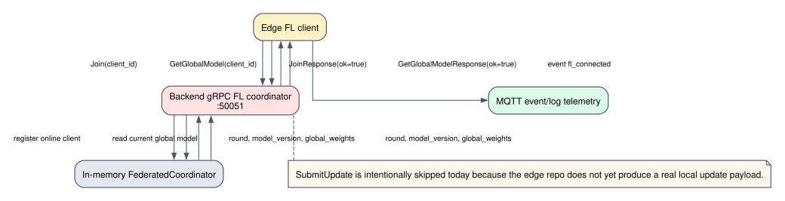

TrashUQ
Edge AI + Federated Learning for real-time trash classification.

Waste systems need live intelligence.
- Urban bins are usually monitored late, manually, or centrally.
- Sending raw images to cloud increases latency, bandwidth and privacy risk.
- Operational value comes from telemetry: status, events, metrics and model health.
- Federated learning lets devices improve without centralizing local samples.
Two connected planes: telemetry and learning.
TFLite + telemetry
broker + WebSocket
subscriber + API
persistent evidence
live WebSocket updates
Join / Get / Submit
Arduino-class nodes run the edge runtime.
--device-id unoq-01 \
--fake-camera --fl \
--fl-trigger-samples 2
- Publishes status, metrics, events and logs.
- Fetches global FL head before local training.
- Submits updates through gRPC after labelled samples.
A small topic contract makes the fleet observable.
Topic contract
-t 'arduino/+/+' -v

The backend turns live packets into evidence.

INSERT mqtt_messages(topic, payload, created_at)
SUB arduino/+/#
Cold-start state comes from PostgreSQL. Live state continues through MQTT WebSocket events.
Live observability for devices, metrics and FL.
- Device table: status, latest heartbeat and telemetry.
- Metric cards: active devices, CPU/RAM, last MQTT event.
- Event stream: logs, FL events and operational signals.
Real screenshot copied from docs/assets/readme/screenshots/dashboard_overview.png
gRPC coordinates local updates with FedAvg.
Join
Client registers and receives current round/version.
GetGlobalModel
Device fetches latest calibration head.
SubmitUpdate
Local update and metrics sent to coordinator.
FedAvg
Coordinator aggregates and advances model_version.
stale updates rejected to preserve monotonic rounds

Two Arduino-class nodes validated end-to-end.
FedAvg stayed stable as client count increased.
Accuracy remains around 93-94%; the main cost is communication, which scales with participating clients.
Validation in six numbers.
Exactly what we run.
docker compose up --build
# 2. run edge runtime / simulator
python -m bin_mpu.main --device-id unoq-01 --fake-camera --fl
# 3. monitor raw MQTT
docker compose exec mqtt mosquitto_sub -h localhost -p 1883 -t 'arduino/+/+' -v
# 4. open dashboard
http://localhost:3000
Stack
Backend, DB, broker, dashboard.
Nodes
Edge clients connect and publish status.
Observe
MQTT stream and dashboard update live.
FL
Submit updates and watch model_version advance.
System integration matters as much as model code.
Edge-to-cloud pipeline works
MQTT - backend subscriber - PostgreSQL - dashboard created a traceable operational loop.
MQTT is simple and robust
A compact topic contract made multi-device telemetry easy to inspect and persist.
Dashboard gives live observability
Device health, metrics, FL charts and event stream exposed what was happening in real time.
FL needs version discipline
The coordinator's stale-round rejections protected monotonic model_version progression.
Research prototype, clear production path.
- Controlled synthetic frames were used for reproducible Arduino validation.
- Part A did not exercise physical camera/PIR classification payloads.
- FL exchanges a compact calibration head, not full MobileNetV2 weights.
- Same-network deployment; production networks need stronger fault testing.
TrashUQ demonstrates a complete platform.
A complete Edge AI + Federated Learning monitoring platform with real deployed integration and experimental validation.
Why
Problem, motivation and architecture.
How
Edge, MQTT, backend and database.
Proof A
Dashboard and real deployment validation.
Proof B
FL scalability, limitations and final message.